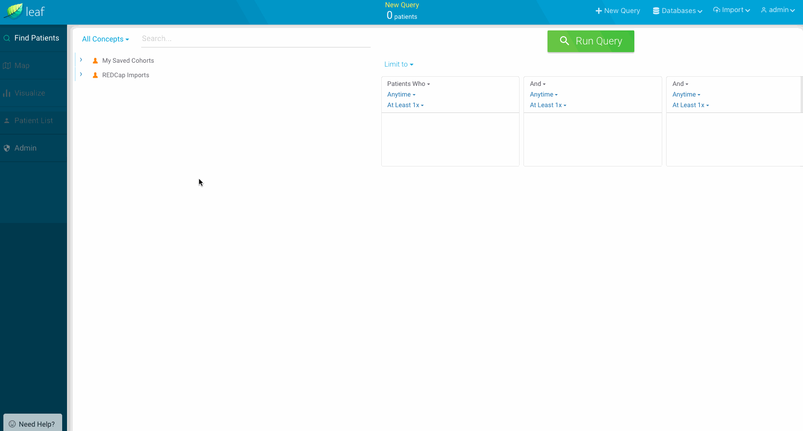

Extracting Data for a Cohort: Datasets
At a high level, Leaf aims to do two things:
- Identify cohorts of patients (using Concepts).
- Extract data for those patients.
After users identify a Cohort in (1), they can next do (2), which we'll explain here. In Leaf, extracted data for a cohort are called "datasets", which is short-hand for Patient List Datasets. This refers to the row-level patient data you can see on the Patient List screen.
Datasets can based on either:
- SQL statements which output dynamic columns unique to your data. Or,
- SQL statements which output templated columns representating of FHIR resources.
We recommend using templated FHIR Datasets (2) only if you are federating your Leaf instance with other institutions, as FHIR templates allow Leaf instances to all return predictable row-level data.
In all other cases, we recommend using dynamic datasets (1), as they offer flexible, easy configurability.
Basic Demographics

The core dataset Leaf uses is Basic Demographics. The output of this query is used to both populate the initial Patient List screen, as well as populate the bar charts on the Visualize screen.
The fields in Basic Demographics represent a denormalized combination of the FHIR Person and Patient resources.
The expected columns are:
| Name | Type |
|---|---|
| personId | nvarchar |
| addressPostalCode | nvarchar |
| addressState | nvarchar |
| birthDate | datetime |
| deceasedDateTime | datetime |
| ethnicity | nvarchar |
| gender | nvarchar |
| deceasedBoolean | bit |
| hispanicBoolean | bit |
| marriedBoolean | bit |
| language | nvarchar |
| maritalStatus | nvarchar |
| mrn | nvarchar |
| name | nvarchar |
| race | nvarchar |
| religion | nvarchar |
Key Points
-
All columns in
Basic Demongraphicsare required - Leaf will automatically date-shift, calculate ages, and remove the HIPAA identified columns (mrnandname) depending on if the user is inIdentifiedorDe-identifiedmode. -
The Patient Identifier column must be called personId - While Leaf Concepts are flexible regarding the column name for patient identifiers, datasets are more restrictive and require a predictable, specific column name. This ensures alignment of Leaf datasets when multiple Leaf instances are federated, among other reasons.
-
It's okay if you don't have data for every column - Though every column must be returned in the SQL statement, it's fine to hard-code it as 'Unknown', etc. For example,
religion = 'Unknown'. -
The
isDeceased,isHispanic, andisMarriedbit/boolean columns are used in the bar charts on theVisualizescreen - These are needed because Leaf does not enforce specific values for theethnicityormaritalStatuscolumns (so you have flexiblity in showing your data as it is), but in return you need to define these true/false columns yourself. For example,hispanicBoolean = CAST(CASE ethnicity WHEN 'Hispanic or Latino' THEN 1 ELSE 0 END AS BIT). -
Values in
gendermust beF,Female,M, orMale- This allows them to be predictably aggregated in bar charts (case insensitive).
Defining the Basic Demographics Query
Basic Demographics and other datasets can be added using the Admin page within Leaf.

-
Define a query in SQL that returns the columns defined above. Make sure each column returns the expected type as well.
-
In Leaf, go to
Admin->Datasets. If you haven't created a Basic Demographics dataset yet, Leaf will suggest you create one. Click to do so. -
Copy/paste or type out your SQL statement. Make sure the green arrows on the left light up to confirm you're returning all expected columns.
Note: you don't need to do anything special to find a particular cohort of patients; just make a plain SQL statement to find any cohort. Leaf will automatically wrap your SQL in a Common Table Expression and filter it to relevant patients for you.
Adding New Datasets
If you've successfully added the Basic Demographics dataset and can see data returned in the Patient List screen in the Leaf user interface, you're off to a great start. Inevitably though you'll likely want to allow users to add more datasets beyond demographics.
Let's start with an example. In this case, we'll add a Platelet dataset which will represent platelet count laboratory tests.
Determine the Template and Query
First, we'll determine which dataset template is the best fit for this new dataset by checking the Dataset Templates Reference below. In FHIR labs are generally represented as Observations, but as we recommend using Dynamic datasets unless federating with other Leaf instances, we'll do so here.
For demonstrative purposes we'll use data from the MIMIC Critical Care Database, but the methods here can be applied to other data models as well.
Let's suppose we have a SQL table or view representing labs (including platelets) called dbo.v_LABEVENTS that looks like this in our SQL database:
| SUBJECT_ID | HADM_ID | LABEL | LOINC_CODE | CHARTIME | VALUE | VALUENUM | VALUEUOM |
|---|---|---|---|---|---|---|---|
| 1 | 100 | Platelet Count | 777-3 | 2101-10-04 | 301 | 301 | K/uL |
| 1 | 200 | Platelet Count | 777-3 | 2101-02-10 | 192 | 192 | K/uL |
| 2 | 300 | Platelet Count | 777-3 | 2101-12-22 | 533 | 533 | K/uL |
Our SQL statement to pull this data in Leaf may therefore look like (changing the column names a bit to make the meaning more clear to users)
SELECT
personId = CAST(SUBJECT_ID AS NVARCHAR(10))
, encounterId = CAST(HADM_ID AS NVARCHAR(10))
, category = 'lab'
, code = LOINC_CODE
, effectiveDate = CHARTTIME
, valueString = VALUE
, valueQuantity = VALUENUM
, valueUnit = VALUEUOM
FROM [dbo].[v_LABEVENTS]
WHERE LABEL = 'Platelet Count'
Which would output:
| personId | encounterId | category | code | effectiveDate | valueString | valueQuantity | valueUnit |
|---|---|---|---|---|---|---|---|
| 1 | 100 | lab | 777-3 | 2101-10-04 | 301 | 301 | K/uL |
| 1 | 200 | lab | 777-3 | 2101-02-10 | 192 | 192 | K/uL |
| 2 | 300 | lab | 777-3 | 2101-12-22 | 533 | 533 | K/uL |
Insert the dataset
Next, we'll add out dataset using the Admin -> Datasets screen.

-
As we did with Basic Demographics, we'll first define a query in SQL that returns the columns defined above.
-
In Leaf, go to
Admin->Datasets. Clickcreate a new oneon the right to add aDataset. -
Copy/paste or type out your SQL statement. Make sure the green arrows on the left light up to confirm you're returning all expected columns.
Test
Finally, let's test to see if the dataset works. In the Leaf client app, run a query for a cohort which you know to have platelet lab values. In the Patient List, select the new dataset.

If you're able to navigate to the Patient List and add the new dataset, congratulations! Leaf automatically determines that this is a numeric dataset because the valueQuantity field is populated, and computes statistics for each patient.
If you run into errors, be sure to check the Leaf logs.